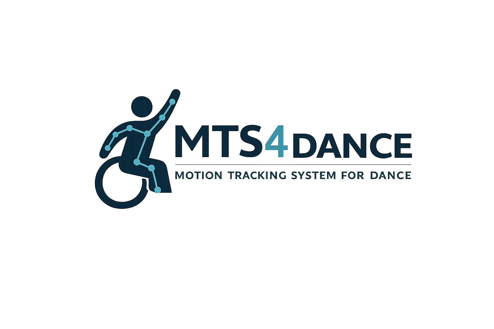
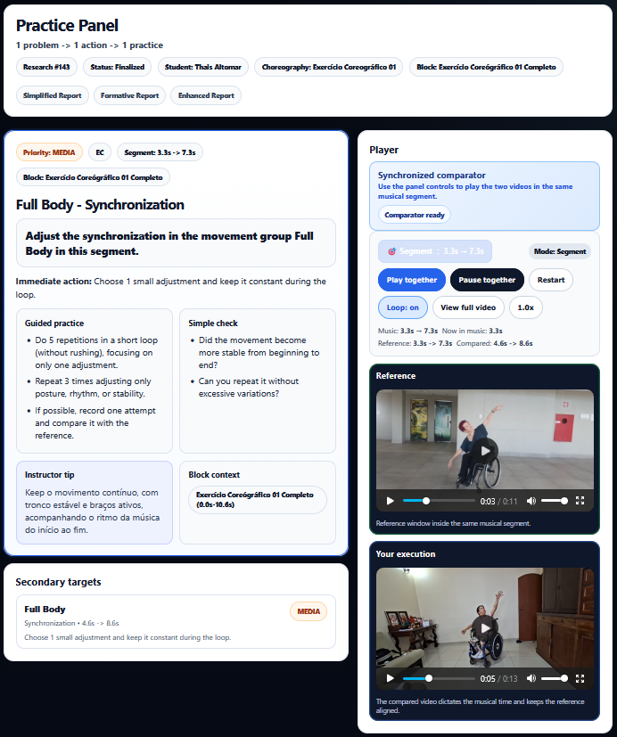
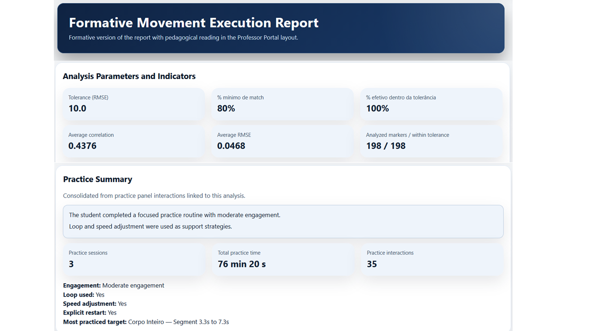
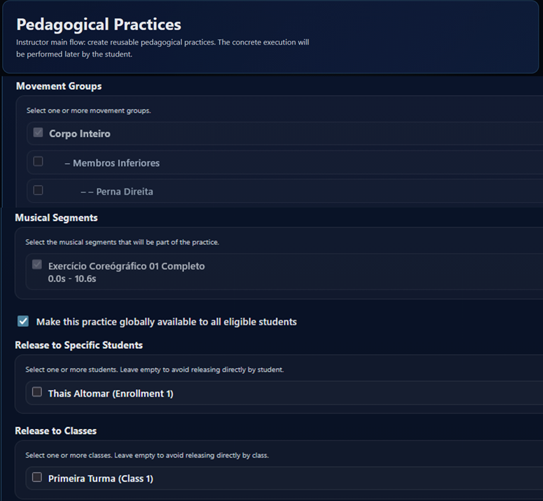
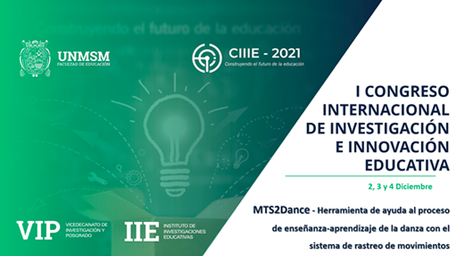
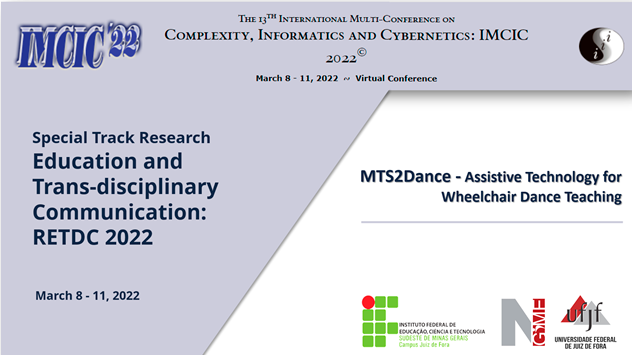
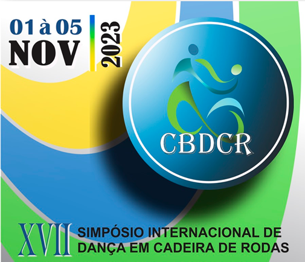
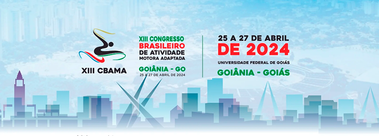
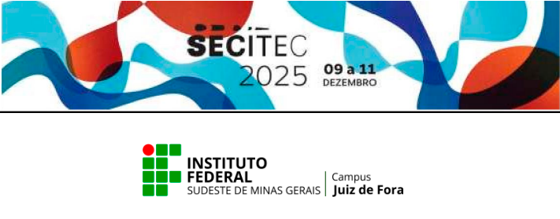

Movement analysis
Structured observation of movement supported by tracking data.

MTS4Dance is an applied research initiative dedicated to the development of technological approaches that support the pedagogical analysis of movement, the comparison of performances and the construction of formative feedback in dance education contexts.
The project places particular emphasis on wheelchair dance, inclusive dance practices and accessibility, while also exploring how movement data can support meaningful reflection in teaching and learning processes.
Rather than simply producing technical measurements, MTS4Dance seeks to translate movement-related information into pedagogically relevant insights for real educational settings.
Overview
Institutions
MTS4Dance brings together academic affiliations, international collaboration, strategic partnerships and institutional support for the development of the research.
The project
MTS4Dance — Motion Tracking System for Dance — investigates how computational approaches may support pedagogical processes in dance education, combining body tracking, performance comparison and structured observation.
The project is particularly committed to wheelchair dance and other inclusive dance contexts, recognising embodied diversity as central to artistic expression, pedagogical reflection and accessible teaching practices.
Instead of focusing on ranking or standardised judgement, the system is designed to support formative feedback, helping educators and learners reflect on practice in contextualised ways.
By integrating education, accessibility, user experience and movement analysis, MTS4Dance contributes to broader discussions on inclusive pedagogy, embodied learning and technology-enhanced dance education.
Structured observation of movement supported by tracking data.
Insights designed to assist teaching and learning processes.
Emphasis on wheelchair dance, accessibility and embodied diversity.
Integration of educational practice, technology and academic research.
How it works
In its current architecture, MTS4Dance organises the analytical process into stages that connect audiovisual records, body tracking, comparative metrics and pedagogical interpretation of performance.
The system works with reference videos and videos of the analysed performance.
Body markers are identified in order to structure temporal movement data.
Measures such as correlation, RMSE, amplitude and musical synchronisation contribute to the analysis.
Results are organised into visualisations and reports designed for educational use.
Research and foundations
Impact
Platform in Action
Selected interfaces from MTS4Dance illustrate how the platform supports movement observation, pedagogical interpretation and guided practice in dance education contexts.
MTS4Dance connects pedagogical design, movement execution and analytical feedback into a continuous learning cycle.

The Practice Panel organizes movement-related feedback into actionable guidance, helping learners focus on what to improve and how to continue practicing in a structured way.

The Formative Report combines performance indicators with pedagogical interpretation and practice-based evidence, helping connect analytical results with learner engagement and performance development.

Teachers design structured learning scenarios by defining movement groups, organizing musical segments, and controlling how practices are delivered to learners.
International dissemination
MTS4Dance has been presented in conferences, academic meetings and professional events, contributing to dialogue on education, accessibility, assistive technology and movement analysis.

Peru · 2021
Virtual · 2022
Brazil · 2023
Brazil · 2024
Brazil · 2025Team, coordination and collaboration
MTS4Dance is being developed within a doctoral research project in Education, combining academic supervision in Brazil and international collaboration within the CAPES PDSE framework.
Doctoral researcher and project lead
PPGE/UFJF · IF Sudeste MG · UAB
Supervisor
PPGE/UFJF
Co-supervisor
PGCC/UFJF
International supervision / PDSE
Universitat Autònoma de Barcelona (UAB)
Contact and collaboration
This page serves as an institutional basis for presenting MTS4Dance in academic, collaborative and international contexts.
The project is open to dialogue and collaboration in the fields of dance, wheelchair dance, accessibility, user experience and movement-related technologies.
A multilingual version and an institutional contact form may be incorporated in future stages of the project.